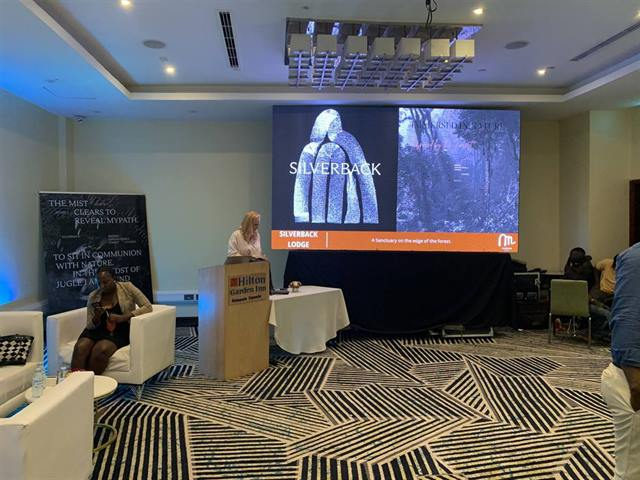

Livestreaming & broadcast
Much of your audience may never set foot in the venue. Multi-camera coverage, live switching and recording carry the event to them, and leave you a full recording when it’s over.
Sembule Media services
Nobody books a sound system because they want a sound system. They want to be heard. Tell us what the day needs to achieve, and we’ll plan everything from the first sound check to the final edit around it.

Much of your audience may never set foot in the venue. Multi-camera coverage, live switching and recording carry the event to them, and leave you a full recording when it’s over.

Half your audience may be on a laptop in another city. We run Zoom meetings and hybrid conferences: remote speakers on the big screen, the room on the stream, and sound that works both ways.

A conference is judged by its worst five minutes. Clear sound, readable screens and dependable coverage for conferences, launches, meetings and workshops, so the room remembers your message rather than the technical pause.

Nobody remembers good sound. Everyone remembers feedback and a dead microphone. We scope the system around your venue and audience, indoors or out, so people talk afterwards about what was said.

People support what they can see. Story-led filming and post-production that shows the work, the community and the people behind it, in their own words.

Donors, partners and communities believe what they can see. Programme films and field stories, coverage of launches, dialogues and workshops, and livestreams for the people who couldn’t travel.

The event lasts a day. The pictures keep working for years: in the annual report, the next proposal, the website. Conferences, launches, portraits and weddings.

Highlight films, interviews, brand films and podcasts, filmed and edited by the crew that ran the day, so nothing is lost between the shoot and the edit.

Big enough for the back row to read your slides. Availability, transport and setup are confirmed with each enquiry.
Tell us the date, the venue and roughly how many people. We’ll suggest the setup. Knowing the equipment is our job, not yours.
Get a suggested setupShow day
01Before the day
Send the date, the venue and roughly how many people. A quote follows within a day, and where the venue allows we visit first, so every role is decided before anyone loads a van.

02Load-in
The team arrives with the vans, builds the PA and the camera positions, and brings its own backup power: a generator for the sound and an online UPS for the stream.

03Checks
A sound check before the doors open, then a stream test on two 5G networks, MTN and Airtel, so a weak signal on one has somewhere to go. Links are scheduled ahead on YouTube and Zoom.

04On air, and after
Three to six cameras, streamed to YouTube, Facebook and Zoom at once. Afterwards you get the full recording, and edits arrive on Google Drive with two rounds of changes included.

What we bring
Most production companies keep this in a folder. Here is ours, so you can check it against your venue and your audience before we talk.
| Video | ||
|---|---|---|
| Cameras | 3 on a standard job, up to 6 | Multi-camera coverage of the stage, the room and the speakers |
| Switching | Blackmagic switchers, vMix | Live cutting between cameras, slides and graphics |
| Extras | Graphics, presentations, remote speakers | Lower thirds, slides on the stream, guests joining online |
| Stream | ||
| Destinations | YouTube, Facebook, Zoom or a custom link | Several at once from the same feed |
| Encoding | Blackmagic Web Presenter, vMix | Links scheduled ahead with your IT or contact person |
| Internet | 5G routers on MTN and on Airtel | Two networks, so a weak signal on one has somewhere to go |
| Sound | ||
| PA | For 50 to 1,000 people | Indoors or outdoors, scoped to the room and the crowd |
| Crew | Sound engineer and electrician | The sound also feeds the stream and the recording |
| Screens | ||
| Display hire | 65-inch TVs | Set up and run by a screen operator for playback |
| Power | ||
| Backup | Generator for sound, online UPS for the stream | For the voltage drops that are common at venues |
| Crew & kit | ||
| Setup | 4 crew, about 40 minutes | Our own vans for transport |
| Capacity | 2 livestream kits, 2 PA systems | Two productions can run on the same day |
| Delivery | ||
| Recording | The full recording of every stream | Yours to keep and share |
| Edits | Delivered on Google Drive | Two rounds of changes included |